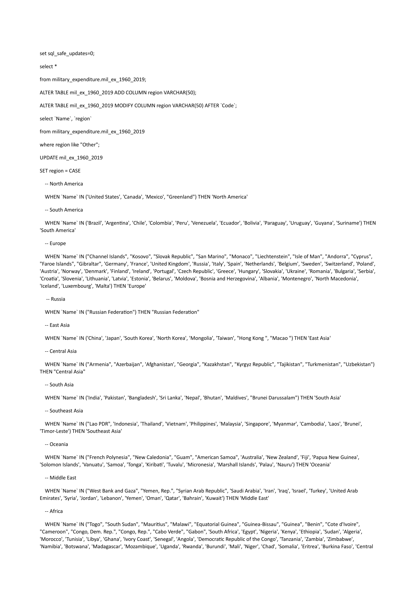
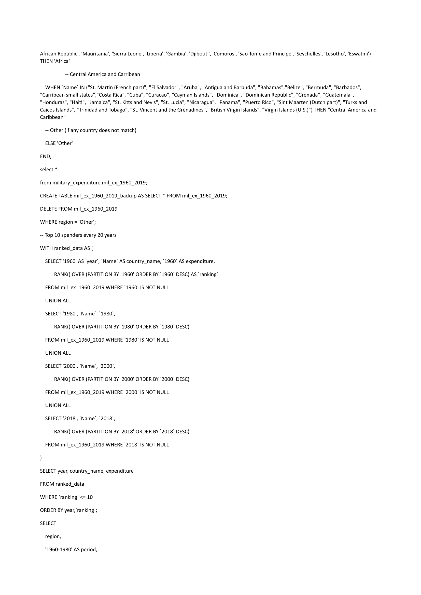
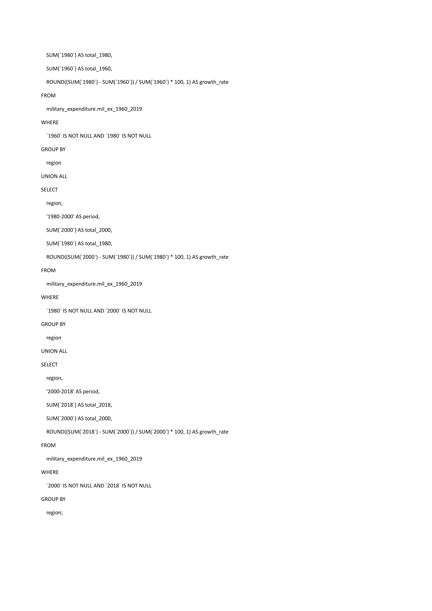
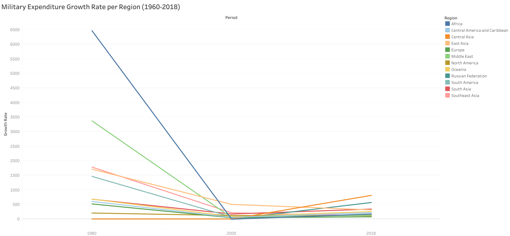

Description
SQL-based analysis of military expenditure since the Cold War, accompanied by Tableau visualizations.
SQL Code
  Tableau Visualization
Storytelling: Military Expenditure Growth (1960-2018)
Military spending has been a key factor in geopolitical strategies worldwide, evolving significantly over the decades. The analysis of military expenditure from 1960 to 2018 provides insight into how different regions have approached defense budgets.
Key Observations from the Data:
- Sharp Increase in Early Years (1960-1980): The data shows extreme spikes in military spending, driven by Cold War tensions and an arms race.
- Decline and Stabilization (1980-2000): Military expenditure decreased significantly after the Cold War ended, leading to budget reallocations.
- Modern Trends (2000-2018): Stabilization occurred in most regions, but Central Asia and the Middle East saw renewed growth due to geopolitical conflicts and security concerns.
This analysis provides a fascinating perspective on global security priorities over nearly six decades.